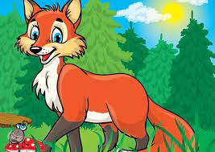
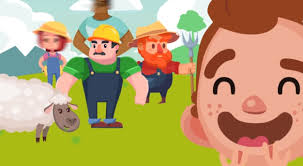
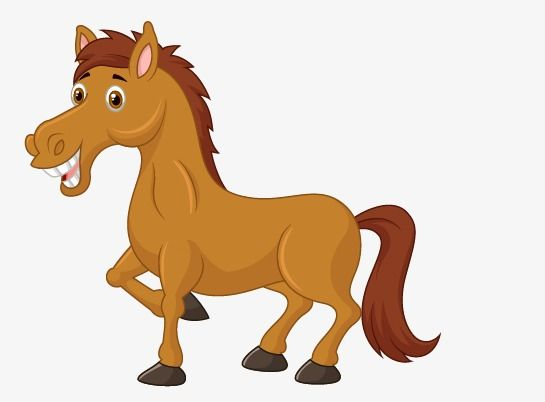
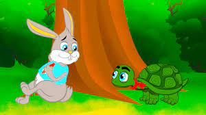

ي يوم من الأيام كان يحكى أن هناك مزارع وكان هذا المزارع مخادع وقام ببيع بئر من الماء الموجود في أرضه لأحد
جيرانه مقابل مبلغ ضخم من المال، وعندما جاء هذا المزارع الذي قام بشراء البئر حتى يستخدم الماء الذي يوجد به في
اليوم الثاني قال له الرجل المخادع أذهب من هنا أيها الرجل فأنا قد بعت لك البئر فقط ولكنني لن ادع لك الماء
التي توجد في هذا البئر.
واندهش الرجل من ذلك واتجه إلى القاضي، حتى يشتكي له خداع المزارع بعد محاولاته الكثيرة حتى يقنعه بأن البئر
والماء الذي اشتراهم من حقه، وبعد أن سمع القاضي بهذه القصة أمر القاضي الرجل المخادع بالحضور وطلب منه أن يقوم
بإعطاء الرجل البئر ولكنه رفض ذلك فقال له القاضي حسنًا فلو كانت الماء لك والبئر له فعليك أن تقوم بإخراج ماءك
من هذا البئر.
الثعلب الماكر

في يوم من الأيام كان هناك غابة كبيرة جدًا وكان يوجد بها أسد يخاف منه كل الحيوانات لأنه يؤذيهم فاجتمع كل
حيوانات الغابة وقرروا أن يتعاونوا مع بعضهم لكي يصطادوا هذا الأسد وبالفعل خرجوا وقاموا بوضع خطة لكي يقوموا
بالقضاء على هذا الأسد عن طريق حبسه في قفص وبالفعل نجحت خطتهم وعاش الحيوانات في أمان وسعادة.
وفي يوم مر بجانب القفص أرنب صغير فقال الأسد للأرنب ساعدني أيها الأرنب على الخروج من القفص، فرد عليه الأرنب
وقال له لا لن أخرجك أبدًا لأنك تعذب الحيوانات، فرد عليه الأسد وقال له أعدك بأنني لن أفعل ذلك مرة أخرى وسأكون
صديق لكل الحيوانات ولن أذي أحد منهم فصدقه الأرنب وفتح له القفص وأخرجه منه وبعد أن خرج الأسد مسك الأرنب وقال
له أنت فريستي، فصاح الأرنب يستغيث.
الأسد والفأر
في يوم من الأيام كان ملك الغابة نائم فصعد فأر على ظهره وبدأ الفأر يلعب فوق الأسد فشعر به الأسد وأمسك به
وقرر أن يأكله، فخاف الفأر وبدأ يعتذر من الأسد وطلب منه أن يحرره ولا يأكله ووعدوه بأنه لن يفعل ذلك مرة أخرى،
وأنه سوف ينقذه في يوم من الأيام فضحك الأسد وقال كيف لك وأنت فأر صغير أن تساعد أسد قوي ثم تركه يمشي بدون أن
يأكله.
وبعد مدة جاءت مجموعة من الصيادين وأمسكوا بالأسد ووثقوه بالحبال حتى يقوموا بإحضار قفص لكي يوضع به فرأى الفأر
ذلك وتذكر وعده له ثم قام بالاقتراب من الأسد، وقام بقرض الحبال فقطعها كلها قبل أن ينتبه إليه الصيادين ونظر
الفار للأسد وقال له ألم أخبرك أنني سوف أنقذك في يوم ما، وندم الأسد على استهزائه لكلام الفأر وشكره
كثيرًا.
الراعي الكذاب

كان يوجد راعي يقوم برعاية الغنم خارج القرية كل يوم وهذا الراعي كان صغير في السن،
ولكنه أصبح يمل من عمله فكان يفكر ماذا يفعل حتى يضيع الوقت ويتسلى،
فخطر بباله فكرة وقال لابد أن أقوم بتنفيذها فنادى على أهل قريته وقال لهم بأعلى صوت الذئب الذئب سيأكلني
أنقذوني أغيثوني الذئب سيأكلني.
فذهب أهل القرية مسرعًا حتى ينقذوه وينجدونه،
وعندما ذهبوا إليه لا يشاهدوا أي ذئب هناك والراعي الكذاب ضحك عليهم في سره مما عملوا فيهم،
وأهل القرية عادوا إلى مكان ما أتوا وكان على وجوهم علامات الغضب الشديد مما فعله الراعي الكذاب معهم،
ولكن الراعي الكذاب أعجبته الفكرة.
ولم يمر إلا أيام قليلة وعاد ينفذ ذات الفكرة من جديد،
وعندما سمعوه يستغيث للمرة الثانية ذهب أهل القرية من جديد حتى ينقذوه ولا يجدوا ذئب أيضًا للمرة الثانية،
وفي يوم من ذات الأيام ظهر بالفعل ذئب حقيقي وكان الراعي هو وغنمه وبدأ الراعي يستنجد ويستغيث بأهل قريته.
ولكن أهل القرية لم ينتبهوا له وتجاهلوه تمامًا واعتقدوا أنه يكذب عليهم مثل كل مرة، والذئب أكل الكثير من غنم
الراعي حتى شعر بالشبع، فالكذاب لا أحد يصدقه حتى لو صدق.
الحصان والسباق

في إحدى الغابات الخضراء الجميلة، والمشهورة بمساحتها الخضراء الشاسعة، عاشت الخيول مع بعضها في سعادة وسلام.
وكعادتهم كل عام قاموا بإجراء سباق الخيول الذي ينتظره الجميع. إلا أنه في ذلك العام، حدث ما لم يكن في الحسبان،
صديقنا الحصان المصاب عدنان قرر أن يشارك في السباق. سخر الجميع من الحصان المصاب. وظل يستهزئون به. وهم يقولون:
ما هذا يا حصان عدنان؟ ألا ترى قدمك المصابة! كيف ستشارك في السباق. لم يرد عليهم الحصان الطيب عدنان، وسار في
طريقه بعد أن أصر على ان يشارك في السباق. في اليوم التالي، وبعد أن حددت المسافة الخاصة بالسباق، ووقف كل حصان
في مكانه المحدد، بما فيهم الحصان المصاب عدنان. أشار الحكم ليبدأ السباق. كانت الخيول المشاركة تنظر الى الحصان
عدنان وهي تضحك، ثم قرروا فجأة أن يأخذوا راحة وهم واثقون أنهم سيفوزون. لم يتوقف الحصان عدنان كما فعل الجميع،
وانما أكمل في السباق السريع، وهو يضع أمام عينيه خط النهاية. استطاع الحصان عدنان الفوز على الجميع، ووصل قبل
باقي الخيول الأخرى. قامت لجنة الحكام بتكريم الحصان عدنان، وطلبوا منه القاء كلمة. فكر الحصان عدنان كثيراً ثم
وافق. قال الحصان عدنان: أصدقائي الخيول، لقد شعر بالحزن قبل بدء السباق، الا انكم وبسبب استهزائكم ساعدتموني في
الوصول الى خط النهاية. شعرت الخيول المشاركة في السباق بالحرج الشديد من الحصان عدنان، وذهبوا للاعتذار منه.
قبل عدنان اعتذارهم وعادوا ليصبحوا أصدقاء لا يعكر صفو سعادتهم أي شيء. بابا وماما الأعزاء لا تنسوا قبل أن
تنهضوا من سرير الصغير ان تناقشوا فيما تعلمه واستفادة من قصة الحصان المصاب وسباق الخيل.
الأرنب و السلحفاة

كان ياما كان في غابة بعيدة يعيش أرنب مغرور،
كان دائم التباهي أمام الحيوانات الأخرى بسرعته الفائقة وقفزه العالي
,وفي يوم من الأيام بينما كان الأرنب يتجول في الغابة صادف في طريقه سلحفاة تمشي ببطء شديد.
فسخر منها وهو يضحك قائلا: بهذه السرعة ستصلين إلى وجهتك في فجر يوم غد...
فردت عليه السلحفاة بكل هدوء: في التأني السلامة وفي العجلة الندامة.
فأغتاظ الأرنب من جواب السلحفاة وتحداها قائلا:
أتحداك في سباق حتى الشجرة الكبيرة في وسط الغابة.
فقبلت السلحفاة التحدي بكل ثقة في النفس. وعند إشارة الانطلاق،
ركض الأرنب كالسهم حتى أصبح غير مرئي،
بينما تقدمت السلحفاة بخطوات بطيئة.
وفي وسط الطريق لاحظ الأرنب أن السلحفاة بعيدة جدا فقرر أن يرتاح في ظل شجرة
حتى تلحق به فيعود الى السباق من جديد.
ولكنه غط في نوم عميق فسبقته السلحفاة إلى خط النهاية،
وفازت عليه في السباق بفضل مثابرتها وعدم استسلامها.